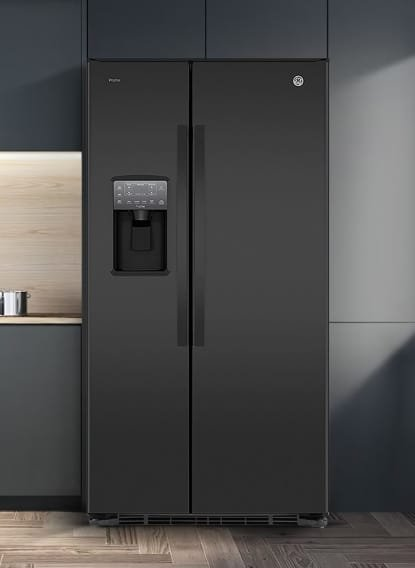
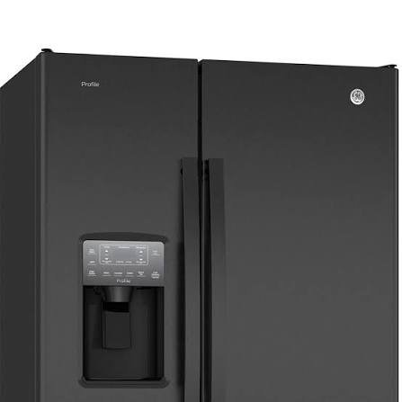
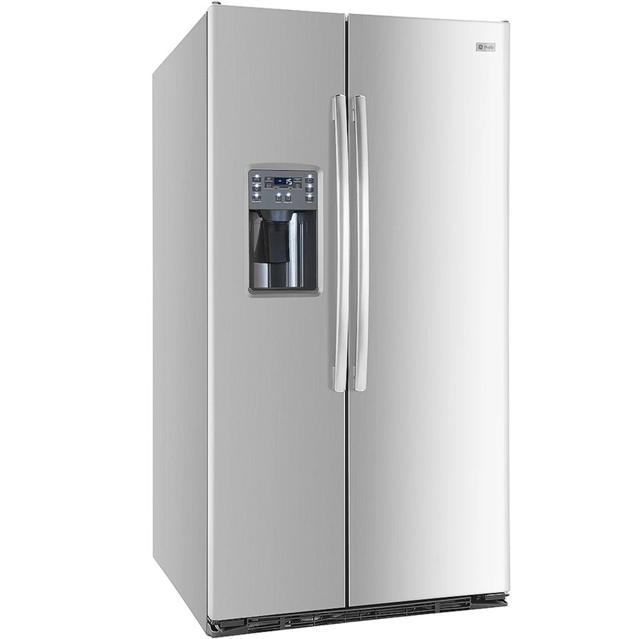
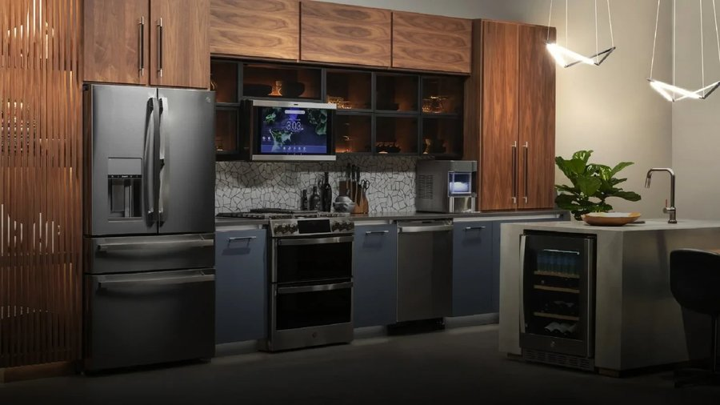
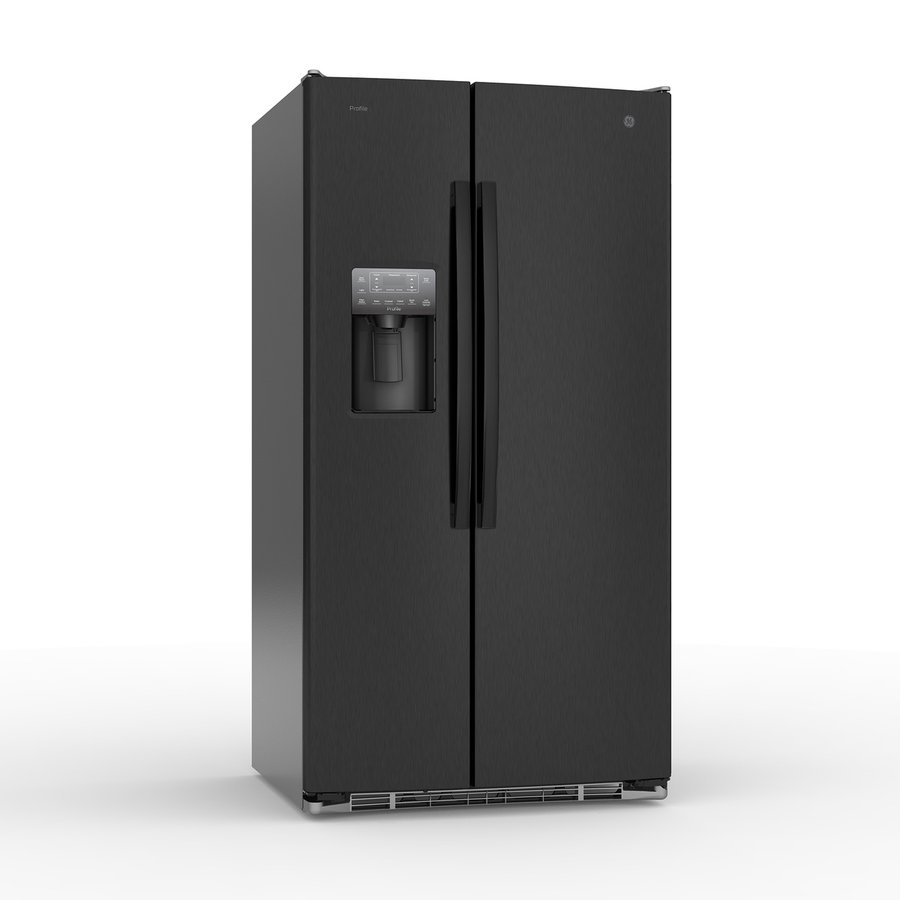

Servicio técnico General Electric en Cartagena: Reparamos, mantenemos e instalamos neveras y nevecones General Electric (GE) a domicilio en Cartagena, con experiencia específica en sus sistemas de dispensador de agua y hielo.

Llame directamente o escriba por WhatsApp al mismo número para agendar su servicio técnico General Electric en Cartagena. Respondemos en minutos.
☏ Escribir por WhatsApp
Contamos con técnicos certificados en la tecnología específica de General Electric (sistemas No Frost y dispensador de agua y hielo). Somos la opción confiable de servicio técnico General Electric en Cartagena para neveras y nevecones General Electric (GE), con dispensador de agua y hielo y sistemas No Frost.
Así de fácil es agendar su servicio técnico General Electric a domicilio.
Cuéntenos por WhatsApp o al +57 321 799 6144 la marca y la falla de su nevera General Electric.
Confirmamos fecha y hora, con el tiempo estimado de llegada según su zona en Cartagena.
El técnico revisa el equipo en su domicilio y le explica la falla y el costo antes de reparar.
Reparamos con repuestos originales General Electric y entregamos garantía escrita.

Un resumen rápido. Vea la guía completa con causas y diagnóstico detallado.
Falla común: El hielo no se produce o el dispensador de agua no funciona.
Síntomas: Suele ser la válvula de agua, la resistencia de descongelamiento del ducto o el motor de la cubitera. La alta humedad de Cartagena acelera el bloqueo por hielo.
Falla común: Acumulación excesiva de hielo en el congelador.
Síntomas: El ventilador hace ruido y el refrigerador deja de enfriar bien. Indica un fallo en el sistema de deshielo (resistencia o bimetal).
Falla común: La nevera no enfría o el compresor no enciende.
Síntomas: Puede ser el relay, el protector térmico o el compresor principal. El sobrecalentamiento en el clima de Cartagena es una causa frecuente.
Si su nevera General Electric presenta alguna de estas señales, es momento de agendar una revisión antes de que la falla se agrave.
Guía completa de diagnóstico: síntomas, causas y solución para cada falla frecuente de su nevera General Electric.
Cuidados específicos para la tecnología sistemas No Frost y dispensador de agua y hielo y el clima de Cartagena.
Instalación profesional con toma de agua, nivelación y prueba de funcionamiento.
Compresores, tarjetas electrónicas y empaques 100% genuinos, con garantía escrita.
Precios, garantía y dudas comunes sobre el servicio técnico General Electric.
Sin importar la línea o el modelo de su equipo General Electric, nuestros técnicos tienen experiencia específica en cada una.
Nevecones de dos puertas verticales GE con dispensador de agua y hielo, disponibles en acero inoxidable y negro.
El modelo clásico GE, con congelador arriba y nevera abajo, ideal para hogares y apartamentos.
Línea superior de GE con control de temperatura digital y acabados premium.
Una nevera o nevecón General Electric bien mantenido puede durar entre 12 y 15 años en Cartagena, siempre que se le haga limpieza de condensador y revisión de sellos con regularidad. La humedad y la salinidad del ambiente costero aceleran el desgaste, por lo que el mantenimiento preventivo hace una diferencia real en la vida útil del equipo.
Como regla general: si su equipo General Electric tiene menos de 8 años y el costo de la reparación es menor al 40% del valor de una nevera nueva equivalente, reparar es casi siempre la opción más económica. Si el compresor ya fue reemplazado antes o el equipo supera los 12-15 años, conviene evaluar el costo de una reparación mayor frente a la compra de un equipo nuevo.
En cualquier caso, nuestro diagnóstico es honesto: si no vale la pena reparar, se lo decimos antes de cobrar cualquier trabajo.
Repuesto original General Electric para fallas de arranque o enfriamiento nulo.
Reemplazo por daños de picos de voltaje, comunes en Cartagena.
Para fallas de agua o hielo en nevecones con dispensador.
Evitan fugas de aire frío y sobreesfuerzo del compresor.
Si su nevera o nevecón General Electric dejó de enfriar, hace ruidos extraños o presenta hielo donde no debería, no está solo: es una de las consultas más frecuentes que recibimos en Cartagena. El clima costero —calor constante, humedad alta y brisa salina— somete a los electrodomésticos a un desgaste mayor que en ciudades del interior del país, y las neveras General Electric con tecnología sistemas No Frost y dispensador de agua y hielo no son la excepción. Esta guía resume lo que debe saber antes de agendar un servicio técnico General Electric en Cartagena.
La tecnología sistemas No Frost y dispensador de agua y hielo de General Electric está diseñada para ser más eficiente y silenciosa que los sistemas convencionales, pero también es más sensible a instalaciones incorrectas, mantenimiento nulo o fluctuaciones de voltaje comunes en la red eléctrica local. Por eso recomendamos un servicio técnico con experiencia específica en neveras y nevecones General Electric (GE), con dispensador de agua y hielo y sistemas No Frost. Un diagnóstico hecho por alguien sin experiencia específica en esta tecnología puede terminar cambiando piezas que no eran el problema real, y encareciendo la reparación innecesariamente.
Entre los motivos más comunes por los que nuestros clientes en Cartagena solicitan un técnico General Electric están: Neveras Side-by-Side con dispensador de agua y hielo (el hielo no se produce o el dispensador de agua no funciona); Modelos con congelador superior (Top Freezer) (acumulación excesiva de hielo en el congelador); Compresor y sistema de enfriamiento (la nevera no enfría o el compresor no enciende). Si identifica alguno de estos síntomas, lo recomendable es desconectar el equipo solo si hay riesgo eléctrico visible (cables pelados, olor a quemado) y agendar una visita cuanto antes: muchas fallas menores se convierten en daños mayores —y reparaciones más costosas— si se dejan pasar varias semanas.
Un buen servicio técnico General Electric en Cartagena debe ofrecerle tres cosas como mínimo: diagnóstico honesto antes de cobrar por repuestos, piezas 100% originales con garantía escrita, y técnicos que conozcan la tecnología específica de su equipo y no solo refrigeración genérica. Es exactamente lo que ofrecemos: revise las secciones de fallas comunes, mantenimiento preventivo e instalación de esta misma página para más detalle sobre cada etapa del servicio.

Si su nevecón General Electric tiene dispensador de agua o fabricador de hielo, el filtro debe cambiarse aproximadamente cada 6 meses. Un filtro vencido reduce el flujo de agua, deja sabor u olor extraño, y puede ensuciar el hielo.
Por qué conviene un servicio con experiencia específica en General Electric.
Un técnico especializado en General Electric conoce a fondo sistemas No Frost y dispensador de agua y hielo, en vez de aplicar soluciones genéricas de refrigeración.
Evita el ensayo y error de cambiar piezas que no eran el problema, algo común cuando el diagnóstico lo hace alguien sin experiencia en la marca.
Un servicio especializado General Electric respalda su diagnóstico con garantía escrita, porque conoce las fallas típicas del equipo.

"Mi nevecón GE dejó de hacer hielo en Bocagrande. Llegaron rápido y con el repuesto correcto."
— Fernando A. (Bocagrande)"Pedí mantenimiento preventivo por la humedad. Muy honestos con el diagnóstico."
— Paula V. (Manga)"Cambiaron el filtro de agua y revisaron el sello de las puertas. Excelente servicio."
— Ricardo M. (Crespo)Sí, diagnosticamos y reemplazamos la válvula de agua, el motor de la cubitera y la resistencia de descongelamiento con repuestos compatibles y originales.
Sí, instalamos filtros de agua compatibles y originales GE, recomendados cada 6 meses.
El diagnóstico es gratuito al agendar la reparación, y siempre confirmamos el costo del repuesto antes de instalarlo.
Cubrimos Bocagrande, Manga, El Laguito, Castillogrande, Crespo, Centro Histórico, Pie de la Popa y Turbaco. Si su zona no aparece, escríbanos para confirmar disponibilidad.
Ver todas las preguntas sobre General Electric → · preguntas generales del sitio →
Reparamos neveras y nevecones de todas las marcas en Cartagena.
Servicio a domicilio en toda la ciudad.
Cuéntanos la falla de tu nevera General Electric. Te confirmamos por WhatsApp en minutos.